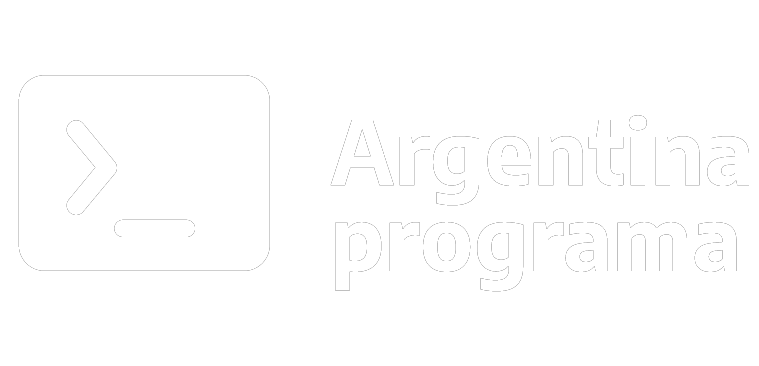

<div class="container">
    <div class="row">
        <div class="col-lg-4 col-md-4 logo">
<!-- logo de argentina programa lado izquierdo -->
            <a href="https://www.argentina.gob.ar/produccion/transformacion-digital-y-economia-del-conocimiento/argentina-programa"
                target="_blank">
                
            </a>
        </div>
<!-- links a mis redes sociales, en el cenetro -->
        <div class="col-lg-4 col-md-4 redes">

                <a href="linkedin.com/in/gabriela-adorno-0b3351208" target="_blank">
                    <svg xmlns="http://www.w3.org/2000/svg" class="icon icon-tabler icon-tabler-brand-linkedin" width="32" height="32" viewBox="0 0 24 24" stroke-width="2" stroke="#ffffff" fill="none" stroke-linecap="round" stroke-linejoin="round">
                        <path stroke="none" d="M0 0h24v24H0z" fill="none"/>
                        <rect x="4" y="4" width="16" height="16" rx="2" />
                        <line x1="8" y1="11" x2="8" y2="16" />
                        <line x1="8" y1="8" x2="8" y2="8.01" />
                        <line x1="12" y1="16" x2="12" y2="11" />
                        <path d="M16 16v-3a2 2 0 0 0 -4 0" />
                      </svg>
                </a>
                <a href="github.com/Sol-Gaby" target="_blank">
                    <svg xmlns="http://www.w3.org/2000/svg" class="icon icon-tabler icon-tabler-brand-github" width="32" height="32" viewBox="0 0 24 24" stroke-width="2" stroke="#ffffff" fill="none" stroke-linecap="round" stroke-linejoin="round">
                        <path stroke="none" d="M0 0h24v24H0z" fill="none"/>
                        <path d="M9 19c-4.3 1.4 -4.3 -2.5 -6 -3m12 5v-3.5c0 -1 .1 -1.4 -.5 -2c2.8 -.3 5.5 -1.4 5.5 -6a4.6 4.6 0 0 0 -1.3 -3.2a4.2 4.2 0 0 0 -.1 -3.2s-1.1 -.3 -3.5 1.3a12.3 12.3 0 0 0 -6.2 0c-2.4 -1.6 -3.5 -1.3 -3.5 -1.3a4.2 4.2 0 0 0 -.1 3.2a4.6 4.6 0 0 0 -1.3 3.2c0 4.6 2.7 5.7 5.5 6c-.6 .6 -.6 1.2 -.5 2v3.5" />
                      </svg>
                </a>
                <a href="#" target="_blank">
                    <svg xmlns="http://www.w3.org/2000/svg" class="icon icon-tabler icon-tabler-brand-instagram" width="32" height="32" viewBox="0 0 24 24" stroke-width="2" stroke="#ffffff" fill="none" stroke-linecap="round" stroke-linejoin="round">
                        <path stroke="none" d="M0 0h24v24H0z" fill="none"/>
                        <rect x="4" y="4" width="16" height="16" rx="4" />
                        <circle cx="12" cy="12" r="3" />
                        <line x1="16.5" y1="7.5" x2="16.5" y2="7.501" />
                      </svg>
                </a>
<!-- botones para el logueo e inicio de secion -->
        </div>
        <div class="col-lg-4 col--4 botones">
            <div class="boto">
                <a class="btn btn-primary" role="button" aria-disabled="true">login</a>
            </div>
            <div>
                <a class="btn btn-primary" role="button" aria-disabled="true">iniciar sesion</a>
            </div>
        </div>
    </div>

</div>